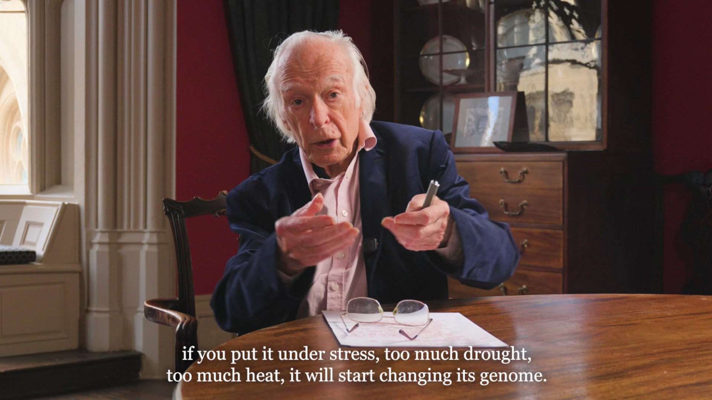

Can Organisms change their genomes?
Turning complex science into audiovisual stories that articulate impact, engage stakeholders, and secure funding.
Policymakers and grant reviewers are often cognitively overloaded — but human stories cut through the noise. We act as your strategic partner, bridging the gap between high-value research and the non-scientific community by translating complex science into accessible, high-impact audiovisual narratives.
In-house end-to-end production.
Protecting your nuance.
New perspectives.
Tailored dissemination.
We sit at the exact intersection of science communication and premium video production. We produce a range of short- and long-form multimedia content, scripted and unscripted, for various audiences and channels. From initial conceptualisation and scriptwriting to post-production and final delivery, we are with you on every step of the way, executing targeted media strategies designed to secure funding and drive societal impact.
We have so far produced a range of short-form popular science videos, social media campaigns (verticals/horizontals), scientific video abstracts, podcast episodes, interview videos, as well as long-form documentary films, lecture videos, and longer explainer videos of abstract scientific concepts.
Initial product conceptualisation, ideas generation & development, scientific content deconstruction, narrative scripting, factchecking.
Finding the story and how to tell itTechnical execution (film and audio recording to highest professional standards, studio design and lights), editorial direction (content oversight, interviewing).
Recording scripted & interview materialMulti-camera set-up and handling of technical equipment (camera, mic, light), stage design, live-streaming, data handling and DIT, documentary-style b-roll acquisition.
Recording unscripted materialVideo editing (incl. multicam & continuity editing), framing and pacing, creative storytelling, audio editing (podcasts), colour correction, sound design, motion graphics design.
Putting the story togetherMapping out a concrete strategy to reach communication goals within logistical & financial constraints. Includes target audience analysis, timeline building, planning of strategic materials, mapping of available communication channels, and dissemination package production for final product delivery.
What do we aim for and how do we get thereScience Media Lab is a specialised science communications and audiovisual production studio, founded by Imperial College London alumni. We are a hybrid team of scientists and filmmakers, passionate about sharing our curiosity for science with the wider public. We believe that in a world of misinformation, authenticity builds trust. We know that science is a deeply human endeavour and we embrace its complexity and messiness. We take pride in finding and crafting the human stories that allow genuine connection with audiences within the complexities of scientific research, without ever sacrificing the nuances of your science.
A multi-format media production partnership. We conceptualised, scripted and produced accessible scicomm & educational videos for public and undergraduate-level audiences, handling all editing, custom motion graphics, and sound design, alongside capturing and editing a full scientific conference and selected speaker interviews. Working closely together with high-profile Professor Denis Noble, we rigorously deconstructed 21st century evolutionary biology concepts and turned them into nuanced narratives for public and academic consumption, alongside managing a 3-camera hybrid event setup and full-scale post-production.
Client Professor Emeritus Denis Noble & Voices from Oxford, University of Oxford
Services Conceptualisation and production of a series of bespoke scicomm and educational videos including scientific content deconstruction, interviewing and scripting, and motion graphic design, multi-cam capturing of the entire hybrid conference over 3 days, filming of selected speaker interviews, b-roll acquisition, event photography, and full-scale post production of all gathered materials.
View selected productions below: